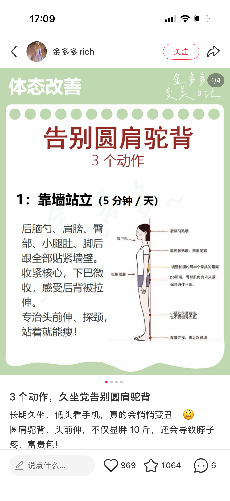

3 个动作，久坐党告别圆肩驼背
长期久坐、低头看手机，真的会悄悄变丑！😫
圆肩驼背、头前伸，不仅显胖 10 斤，还会导致脖子疼、富贵包！
把看过同一篇笔记的陌生人，变成一起完成过一件事的人。
进入笔记后，点击底部 ☆ 收藏开始体验
概念原型 · 非小红书官方产品

长期久坐、低头看手机，真的会悄悄变丑！😫
圆肩驼背、头前伸，不仅显胖 10 斤，还会导致脖子疼、富贵包！
找到开始时间和节奏相近的人，把“收藏”变成一次真正的行动。
选择只用于本次组队，计划结束后自动失效。
没有必须聊天的压力，之后也可以随时更改。
根据开始时间、节奏和参与方式排序同行者；不会替你发送消息。
先看目标与节奏，再看当前是否方便参与。
先一起做件小事，再决定要不要认识彼此。
不催促、不评判；未打卡不会通知其他成员。
今天也给自己留了几分钟，完成！
第 1 天完成。很高兴和你们一起开始。
7 天前，你们只是看过同一篇笔记的陌生人。
关系不是系统宣布的只有双方都愿意，才会继续关注或交流。
有效果吗😭
我也在慢慢坚持，大家可以记录自己的感受～
靠墙站是最好的方法
每个动作做 8 个拍可以吗？就是从 12345678
为啥有些说脚后跟不能靠墙，有些又说脚后跟要靠墙